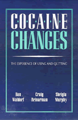

Over 200 in-depth interviews with heavy users document the dangers of cocaine, but the authors contend that the national hysteria over it is largely unfounded
Over 200 in-depth interviews with heavy users document the dangers of cocaine, but the authors contend that the national hysteria over it is largely unfounded


 Over 200 in-depth interviews with heavy users document the dangers of cocaine, but the authors contend that the national hysteria over it is largely unfounded
Over 200 in-depth interviews with heavy users document the dangers of cocaine, but the authors contend that the national hysteria over it is largely unfounded

|  |
Cocaine ChangesThe Experience of Using and QuittingDan Waldorf, Craig Reinarman and Sheigla Murphypaper EAN: 978-1-56639-013-2 (ISBN: 1-56639-013-3) |
"In an arena of public policy where misinformation and disinformation reigns, ... facts are desperately needed, and Cocaine Changes gives us a bucketful of them. Anyone who values rationality and is concerned about the harmful efforts of our misbegotten drug policy should read this book."
—Ira Glasser, Executive Director, ACLU
The latest War on Drugs in the United States targeted cocaine and later crack as an "epidemic" sweeping the nation with tragic and irreversible effects. Dan Waldorf, Craig Reinarman, and Sheigla Murphy conducted a study of heavy cocaine users in an effort to understand how they got started, their uses of cocaine, the "natural" progression of use and abuse, and the motivations to stop as well as strategies to do so. Cocaine Changes, based on 267 in-depth interviews with heavy users, authoritatively documents the dangers of cocaine but contends that the national hysteria over it is largely unfounded. Many of the respondents actually could, and did, regulate their use so that it did not disrupt their daily lives. Many others managed to stop using and walk away from cocaine. The authors' surprising conclusions challenge the American public to think about drug use and its cultural context in more complicated ways and to develop more rational public policies toward drug problems.
With compelling evidence, the authors found that cocaine is neither immediately nor inevitably addictive, and that controlled use is not only possible but extremely common. Presenting what they describe as "politically inconvenient scientific knowledge," they demonstrate that what keeps many heavy users from falling into "the abyss of abuse" and what helps retrieve those who do fall is a stake in conventional life: jobs, families, friends. While millions of dollars have been spent on ads asserting that "the best thing you can do for a cocaine addict is to cut him off," these findings argue that friends, family, and meaningful roles are precisely what makes controlled use and cessation possible.
Another surprising result of this study is the relative ease with which so many heavy users managed to quit. Most of the participants who wanted to quit using cocaine did so without treatment and found it was far less difficult than imagined (or advertised). Furthermore, many formerly heavy users resumed occasional use without relapse. Most assuredly, Waldorf, Reinarman, and Murphy are convinced that cocaine use entails real risks. Their interviews reveal a wide array of physical, psychological, and social problems. Nevertheless, they conclude that if controlled use is possible and addiction not inevitable, then "cocaine's image as the great scourge of the late twentieth century" is distorted by moralistic rhetoric.
"I know of no other book that offers so much information on the subject so clearly and calmly presented. For anyone interested in the natural history of cocaine use in America now, Cocaine Changes provides the best, most comprehensive available resource."
—Lester Grinspoon, M.D., Harvard Medical School
"This book puts the cocaine scare of the 1980s to the test and places cocaine in a more realistic perspective. By examining the lives of hundreds of heavy users, it discovers that even among this group, cocaine use is not always cocaine abuse."
—Kevin B. Zeese, Drug Policy Foundation
"This provocative study challenges many of the prevailing myths about cocaine and crack use, and is essential reading for any researchers, educators, policymakers, law enforcement personnel, or concerned citizens who wish to make informed judgments."
—Patricia G. Erickson, Ph.D., Head, Drug Policy Research Program (Canada)
"This book puts the cocaine scare of the 1980s to the test and places cocaine in a more realistic perspective. By examining the lives of hundreds of heavy users, it discovers that even among this group, cocaine use is not always cocaine abuse."
—Kevin B. Zeese, Vice-President and Counsel, Drug Policy Foundation
Acknowledgments
1. Changing Perspectives on Cocaine: An Introduction
Part I: Using Cocaine
2. Getting into Coke: Initiation and Styles of Use
3. Things Go Better with Coke: The Uses of Cocaine
4. Cocaine at Work: A Case Study of "The Company"
5. Selling Cocaine: Drifting into Dealing
6. The Call of the Pipe: Crack Use and Freebasing
7. Controlled Users
Part II: Having Trouble with Cocaine
8. Cocaine-Related Problems
Part III: Quitting Cocaine
9. Quitting Cocaine: Motives, Strategies, and Actions
10. Making Sense of Cessation: A Synthesis
Part IV: Conclusions
11. Ten Years After: Long-Term Impacts of Cocaine on a Small Network of Users
12. Coke and Culture
Appendix: Study Background, Methods, and Sampling
Notes
References
Index
Dan Waldorf is a Research Sociologist and Project Director at the Institute for Scientific Analysis.
Craig Reinarman is Associate Professor of Sociology at the University of California, Santa Cruz.
Sheigla Murphy is Co-Principal Investigator of a National Institute on Drug Abuse study of women and cocaine.
Health, Society, and Policy, edited by Sheryl Ruzek and Irving Kenneth Zola.
No longer active.
Health, Society and Policy, edited by Sheryl Ruzek and Irving Kenneth Zola, takes a critical stance with regard to health policy and medical practice, ranging broadly in subject matter. Backlist titles include books on the legal and professional status of midwifery, the experience and regulation of kidney transplants, the evolution of federal law on architectural access, and a political/ethical argument for making the community responsible for universal access to health care.
© 2015 Temple University. All Rights Reserved. This page: http://www.temple.edu/tempress/titles/676_reg.html.